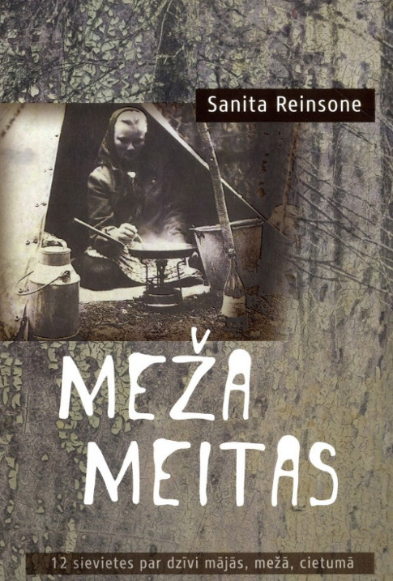
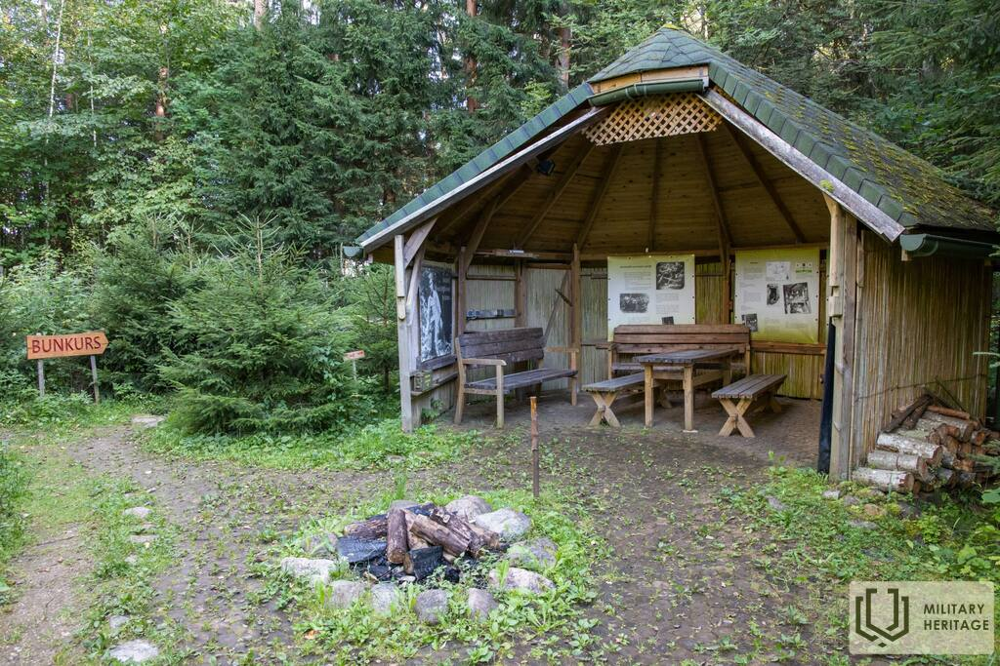
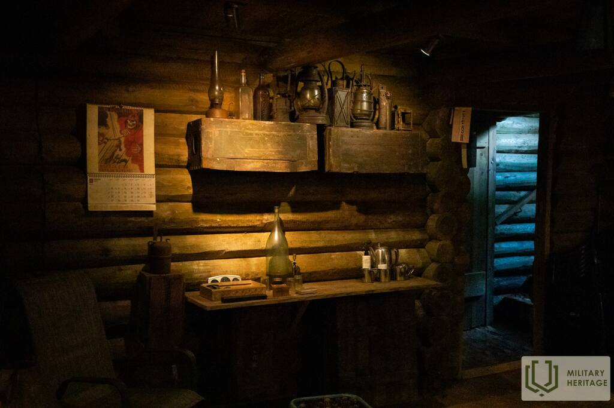
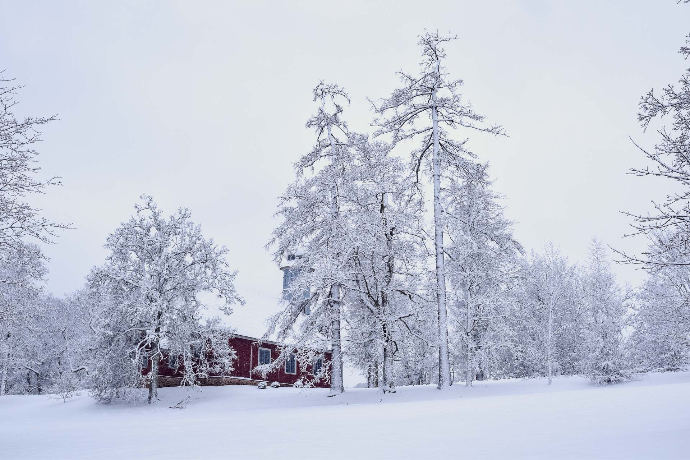
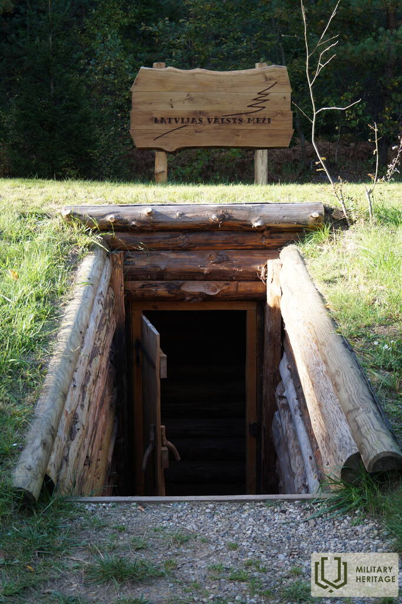
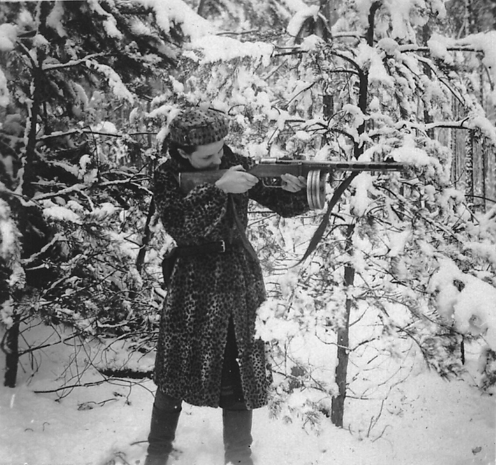
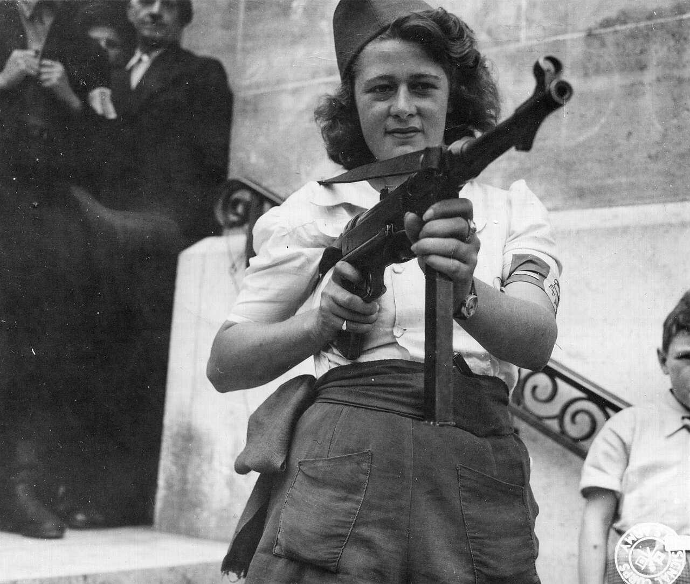
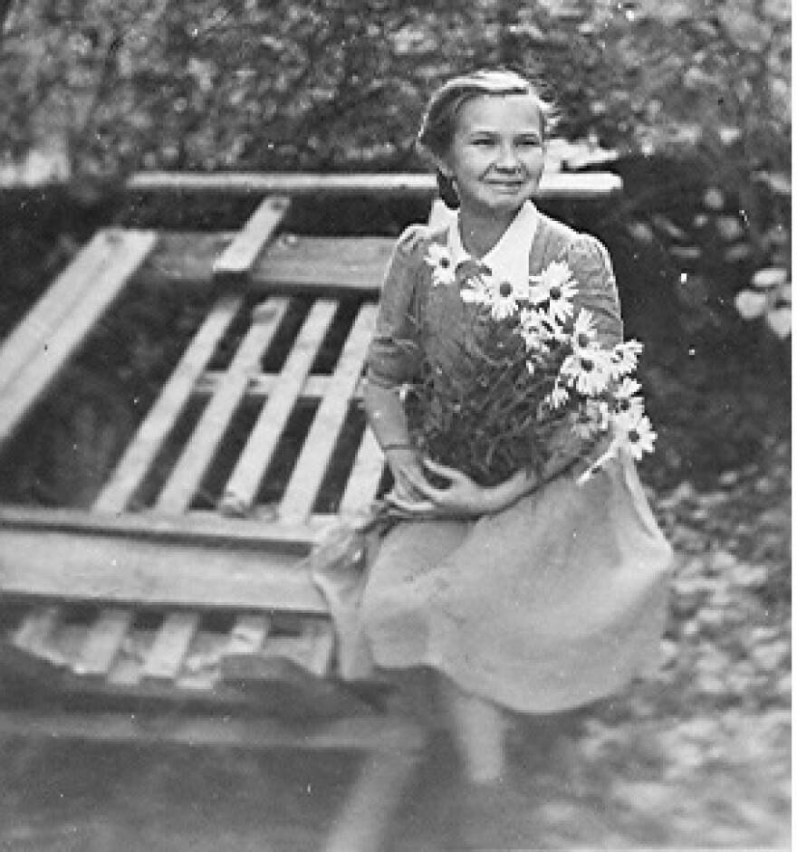

Meža meitenes
Sanita Reinsone

Par grāmatu
"Meža meitenes" ir Sanitas Reinsones dokumentālās prozas darbs, kas vēsta par sievietēm, kuras pēc Otrā pasaules kara devās uz mežu un iesaistījās nacionālajā pretestības kustībā pret padomju okupāciju. Grāmata balstīta uz mutvārdu vēstures liecībām un ilggadēju pētniecisko darbu.
Šis darbs atklāj līdz šim maz pētītu tēmu — sieviešu lomu Latvijas nacionālajā pretestībā. Grāmata sniedz iespēju runāt pašām sievietēm — viņu pašu vārdiem un atmiņām, nevis tikai caur vīriešu stāstījumu.
Es vēlējos, lai šīs sievietes tiktu sadzirdētas. Viņu stāsti ir daļa no mūsu vēstures, un tos nedrīkst aizmirst.
— Sanita ReinsoneInteresanti fakti par grāmatu
Grāmata balstīta uz desmitiem interviju ar sievietēm, kuras piedalījās nacionālajā pretestībā.
Sanita Reinsone vairākus gadus vāca materiālus arhīvos un personīgās sarunās.
Grāmata kļuva par bestselleru un tika pārdota tūkstošiem eksemplāru.
Izraisījusi interesi arī ārvalstu pētnieku vidū par sieviešu lomu pretestībā.
Citāti no grāmatas
"Mēs dzīvojām kā dzīvnieki, bet mēs bijām brīvas." — kāda meža meitene
"Svarīgākais bija nezaudēt cerību. Tik ilgi, kamēr cerība ir dzīva, tu vari izturēt jebko." — no grāmatas
Sanita Reinsone
Rakstniece un pētniece
Vide
Latvijas mežs — patvērums un cietums

Partizānu bunkurs
Bunkura iekšpuse
Mežs ziemā
Īles bunkura rekonstrukcijaGrāmatas darbība norisinās Latvijas mežos laikā no 1944. līdz 1950. gadu vidum. Pēc Otrā pasaules kara daudzi Latvijas iedzīvotāji, bēgot no padomju represijām un izsūtījumiem, devās slēpties mežā, kur izveidojās nacionālās pretestības kustība — meža brāļi.
Šī vide bija ārkārtīgi skarba — bunkuri un zemnīcas, kas mitri un auksti, purvi, biezokņi, pastāvīgas briesmas. Ziemā temperatūra pazeminājās līdz -30 grādiem. Daudzas meitenes mežā pavadīja vairākus gadus.
Vide simbolizē gan patvērumu no okupācijas režīma, gan ieslodzījumu — mežs kļuva par mājām, bet tajā pašā laikā tas bija šķērslis atgriezties normālā dzīvē.
Bunkuri bija izvietoti dziļi mežā, bieži vien purvainās vietās, lai apgrūtinātu padomju drošības spēku piekļuvi. Tie bija būvēti no koka un zemes, ar maziem lodziņiem un dūmvadiem, kas maskēti ar zariem.
Varoņi
Trīs sievietes — trīs likteņi

Marija
19 gadu vecumā devās mežā pēc tēva aresta. Kļuva par sakarieni starp partizānu grupām, riskējot ar dzīvību katru dienu. Viņas pienākums bija pārnēsāt ziņas un pārtiku starp dažādām grupām, bieži vien pa nakti un pa nezināmiem ceļiem.

Līga
Medicīnas studente, kura pirms došanās mežā bija apguvusi medicīnas pamatus. Mežā viņa strādāja par medmāsu ievainotajiem partizāniem, bieži vien bez jebkādiem medikamentiem un instrumentiem. Viņa glāba dzīvības ar to, kas bija pieejams – meža ārstniecības augiem un savām rokām.

Elza "Meža roze"
Dēvēta par "Meža rozi" savas drosmes un skaistuma dēļ. Izcēlusies ar neatkarīgo garu un nebaidījās stāties pretī briesmām. Piedalījusies vairākās kaujās, tikusi ievainota, bet vienmēr atgriezusies ierindā. Viņas segvārdu partizāni viņai piešķīra pēc tam, kad viņa viena pati izglāba ievainotu biedru no ielenkuma.
Grāmatā apkopoti desmitiem sieviešu stāstu. Viņas valkāja vīriešu drēbes, slēpa sejas, bet saglabāja iekšēju spēku.
Atziņas
Galvenās idejas no grāmatas
Brīvības cena
Cilvēka vēlme būt brīvam savā zemē ir spēcīgāka par bailēm no nāves vai bada. Meitenes mežā izvēlējās cīnīties, zinot, ka par atkāpšanos nav iespējas.
"Labāk mirt brīvai, nekā dzīvot verdzībā."Sievietes spēks
Karš un pēckara laiks nav tikai vīriešu cīņa; sievietēm bija jābūt neiedomājami stiprām, lai izdzīvotu mežā.
"Mēs bijām ne tikai meža māsas, mēs bijām karotājas."Vēstures liecību vērtība
Katrs personīgais stāsts veido mūsu tautas kopējo vēsturi. Šīs sievietes ilgus gadus klusēja, bet tagad viņu balsis ir dzirdamas.
"Mēs esam parādā viņiem, ka viņu stāsti netiek aizmirsti."Kultūras nozīme
Teātris, apbalvojumi un sabiedriskā rezonanse
Teātra izrāde
2019. gadā Latvijas Nacionālajā teātrī režisors Valters Sīlis iestudēja izrādi "Meža meitenes". Izrāde guva plašu rezonansi un saņēma vairākas nominācijas.
Apbalvojumi
Latvijas Literatūras gada balvas speciālbalva (2016) par nozīmīgu ieguldījumu vēstures apzināšanā.
Sabiedriskā nozīme
Grāmata ievadīja diskusiju par sieviešu lomu Latvijas nacionālajā pretestībā.
Atsauces
Izmantotie avoti un resursi